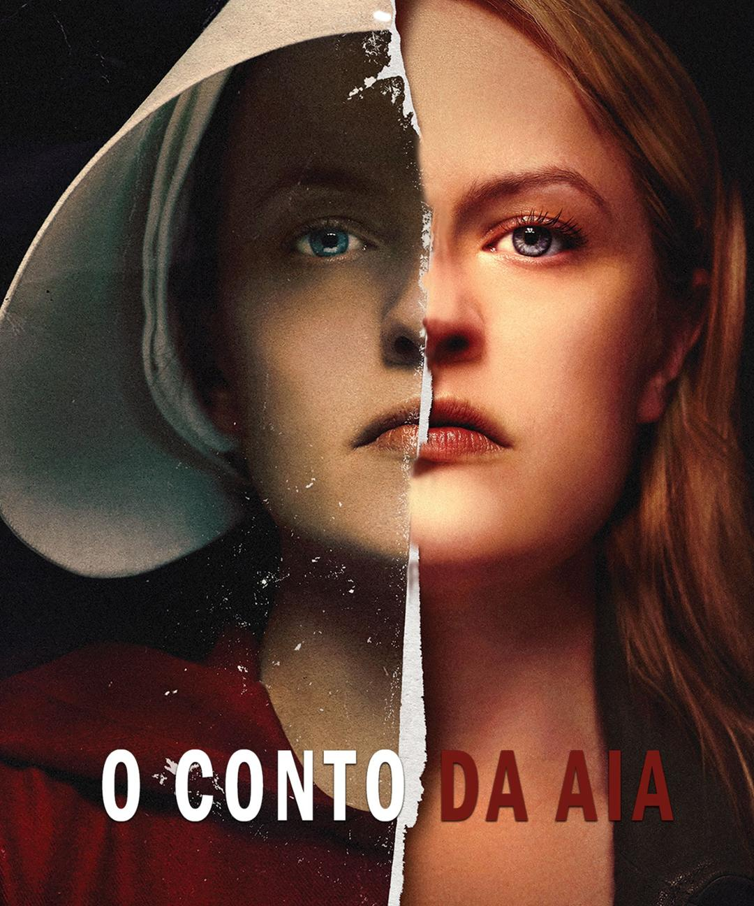
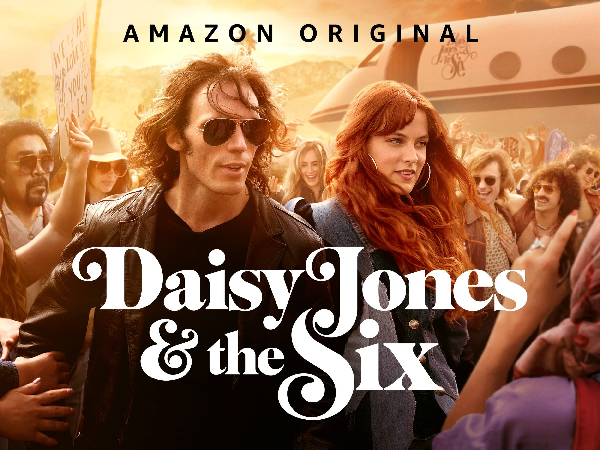

Adataçães que vocé deve assitir agora
Se você é um amante de livros e também um entusiasta do cinema e da TV, provavelmente está sempre em busca de novas adaptações de livros que prometem trazer suas histórias favoritas para a tela grande ou pequena. Este ano, uma série de adaptações
está chamando a atenção, e você não vai querer perder nenhuma delas. Aqui está uma lista das adaptações mais esperadas:
O Conto da Aia - Margaret Atwood

- Treiler
adaptado para: Série de TV
Sinopse: Depois que um atentado terrorista ceifa a vida do Presidente dos Estados Unidos e de grande parte dos outros políticos eleitos, uma facção catolica toma o poder com o intuito declarado de restaurar a paz. O grupo transforma o país
na República de Gilead, instaurando um regime totalitário baseado nas leis do Antigo Testamento, retirando os direitos das minorias e das mulheres em especial. Em meio a isso tudo, Offred é uma "handmaid", ou seja, uma mulher cujo único
fim é procriar para manter os níveis demográficos da população. Na sua terceira atribuição, ela é entregue ao Comandante, um oficial de alto escalão do regime, e a relação sai dos rumos planejados pelo sistema.
Daisy Jones and The Six

- Treiler
Adaptado Para: Série de TV
Sinopse: Daisy Jones & The Six é uma série dramática baseada no livro de mesmo nome escrito por Taylor Jenkins Reid. A trama gira em torno de uma famosa banda de rock dos anos 70, desde sua ascensão meteórica na cena musical de Los Angeles
até sua separação inesperada no auge de sua popularidade. A princípio, Daisy (Riley Keough) é uma garota de 18 anos que sempre sonhou em ser uma estrela do rock. Em paralelo, The Six, banda liderada por Billy Dunne (Sam Claflin), começa
a encontrar seu lugar em meio a música. Quando o caminho de ambos se cruzam, um produtor percebe o potencial que ambos artistas poderiam ter se unissem forças. A série é produzida pela atriz Reese Witherspoon
E Assim que Acaba
- Treiler
Adaptado Para: Filme
Sinopse:É Assim Que Acaba, longa do diretor Justin Baldoni, é uma adaptação cinematográfica do livro de mesmo nome da autora Collen Hoover. Na trama, Lily Bloom (Blake Lively) é uma mulher que, após vivenciar eventos traumáticos na infância,
decide começar uma vida nova em Boston e tentar abrir o próprio negócio. Como consequência dessa mudança de vida, Lily acredita que encontrou o amor verdadeiro em Ryle (Justin Baldoni), um charmoso neurocirurgião. No entanto, à medida
que o relacionamento se torna cada vez mais sério, também surgem lembranças de como era o relacionamento de seus pais. Até que, repentinamente, Atlas Corrigan (Brandon Sklenar), seu primeiro amor e uma ligação com o passado - uma alma
gêmea, talvez? - retorna para a vida de Lily. As coisas se complicam ainda mais, quando um incidente doloroso desencadeia um trauma do passado, ameaçando tudo o que Lily construiu com Ryle. Agora, com seu primeiro amor de volta em sua
vida, ela precisará decidir se tem o que é preciso para levar o casamento adiante.
volte